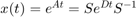
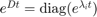
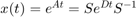
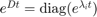

Contents
file: gyak2_Laplace.m author: Polcz Péter <ppolcz@gmail.com>
Created on 2017.02.23. Thursday, 13:46:44
global SCOPE_DEPTH
SCOPE_DEPTH = 0;
beginning of the scope
TMP_QVgVGfoCXYiYXzPhvVPX = pcz_dispFunctionName; try c = evalin('caller','persist'); catch; c = []; end persist = pcz_persist(mfilename('fullpath'), c); clear c; persist.backup(); %clear persist
┌gyak2_Laplace │ - Persistence for `gyak2_Laplace` reused (inherited) [run ID: 4948, 2017.02.23. Thursday, 14:26:20] │ - Script `gyak2_Laplace` backuped
Kezdetiérték feladat megoldása sajátérték felbontással
Lineáris differenciálegyenlet rendszer:  Megoldás: , ahol 
Megoldás: , ahol 
syms t real A = [2 3 ; 2 1]; x0 = [0;1]; [S,D] = eig(A); % Kezzel kiszámolt: S1 = [ 3/2 1 1 -1 ]; SDS_A_iszero = S * D / S - A SDS_A_iszero = S1 * D / S1 - A exp_Dt = diag(exp(diag(D)*t)); fprintf('\nexp(Dt) = \n\n') pretty(exp_Dt) exp_At = expand(S * exp_Dt / S); fprintf('\n[Matlabbal szamolt sajatvektorok] \nexp(At) = \n\n'), pretty(exp_At) exp_At = expand(S1 * exp_Dt / S1); fprintf('\n[Kezzel szamolt sajatvektorok eseten] \nexp(At) = \n\n'), pretty(exp_At) xt = exp_At * x0; fprintf('\nA differencialegyenlet megoldasa: x(t) = \n\n') pretty(expand(xt))
SDS_A_iszero =
0 0
0 0
SDS_A_iszero =
1.0e-15 *
0 0.4441
0 0
exp(Dt) =
/ exp(4 t), 0 \
| |
\ 0, exp(-t) /
[Matlabbal szamolt sajatvektorok]
exp(At) =
/ 2 exp(-t) exp(4 t) 3 exp(4 t) 3 3 exp(-t) \
| --------- + ----------, ---------- - --------- |
| 5 5 5 5 |
| |
| exp(4 t) 2 2 exp(-t) 3 exp(-t) exp(4 t) 2 |
| ---------- - ---------, --------- + ---------- |
\ 5 5 5 5 /
[Kezzel szamolt sajatvektorok eseten]
exp(At) =
/ 2 exp(-t) exp(4 t) 3 exp(4 t) 3 3 exp(-t) \
| --------- + ----------, ---------- - --------- |
| 5 5 5 5 |
| |
| exp(4 t) 2 2 exp(-t) 3 exp(-t) exp(4 t) 2 |
| ---------- - ---------, --------- + ---------- |
\ 5 5 5 5 /
A differencialegyenlet megoldasa: x(t) =
/ exp(4 t) 3 3 exp(-t) \
| ---------- - --------- |
| 5 5 |
| |
| 3 exp(-t) exp(4 t) 2 |
| --------- + ---------- |
\ 5 5 /
end of the scope
pcz_dispFunctionEnd(TMP_QVgVGfoCXYiYXzPhvVPX);
clear TMP_QVgVGfoCXYiYXzPhvVPX
└ 0.69889 [sec]